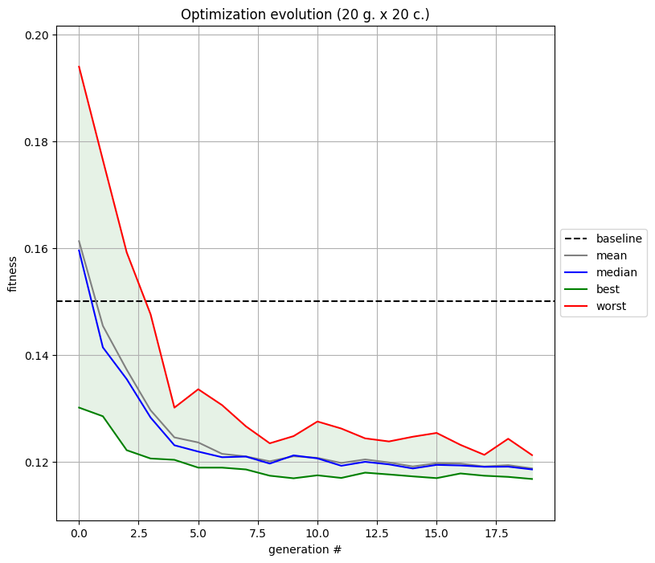

Evolution and Optimizer Modules
The evolution and optimizer modules are designed to define all components required by an evolution algorithm based on the inspyred logic:
generator: a function used to sample an initial population,observer: a function executed after each evaluation,evaluator: a function used to evaluate the candidates of each generation,- some additional optimization arguments.
The framework currently supports two optimization libraries : inspyred and pymoo.
The Evolution class is the upmost class in the optimization framework. It is used to define the optimizer, the evolution algorithm and how they should be executed together. Thus, the Optimizer required attributes and methods are passed to the evolutionary computation algorithm (see ec framework for inspyred and algorithms in pymoo) and its optimization method (see ec.evolve for inspyred and optimize.minimize for pymoo). To do so, the Evolution class ensures that the algorithm object and the optimization method are set and executed according to the chosen library requirements.
Evolution
The Evolution abstract class is initialized with the configuration dictionary that is used to instantiate its optimizer (Optimizer) attribute.
In addition, it implements two base methods:
set_ea: which sets the evolutionary algorithm,evolve: which defines how the optimization should be executed.
When an optimization is launched, the InspyredEvolution or PymooEvolution class is selected based on the option passed to the optim command (see example below). From there, the evolution strategy is selected based on the optimizer and its strategy_name. By default, strategy_name = "PSO" but this can be changed by specifying "strategy" in the "optim" entry of the configuration file.
Tip
Only two single objective strategies are currently supported for each library: ES and PSO for inspyred, GA and PSO for pymoo. More advanced strategies must be specified by customizing the Evolution class (see Customized Optimization).
Note
InspyredEvolution or PymooEvolution are briefly described in their respective class definition (see Evolution classes).
Optimizer
The Optimizer abstract class extracts general arguments from the "optim" and "study" dictionaries of the configuration file such as:
[optim] n_design (int): the number of design points i.e. the dimension of the problem,[optim] doe_size (int): the doe/population size i.e. the number of individuals per generation,[optim] max_generations (int): the maximal number of generations to evaluate,[study] file (str): the baseline geometry file,[study] outdir (str): the optimization output directory,[study] study_type (str): the type of study i.e. the meshing routine to use.
It instantiates optimization related objects:
generator (Generator): object to sample the initial DOE,ffd (FFD_2D): object to deform the baseline geometry,gmsh_mesh (Mesh): object to mesh the deformed geometry.
It also implements the following three base methods:
process_config: which goes through the configuration file making sure expected entries are well defined,deform: which generates the deformed candidate,mesh: which meshes the deformed candidates.
Regardless of the optimization library, the Optimizer class acts as an evaluator and must hence implement an _evaluate method that is used during the optimization. However since they both have their own specificities in terms of candidate management, typing and structure, the choice has been made to inherit the Optimizer class separately for each library.
Tip
The Generator class is based on scipy.qmc samplers. It supports three different sampling techniques: "lhs", "halton" and "sobol". The sampling technique is selected with the sampler_name entry of the "optim" dictionary in the configuration file.
Note
All optimizer parameters are described in their respective class definition (see Optimizer, WolfOptimizer (inspyred), WolfOptimizer (pymoo)).
Wolf Optimizer
The WolfOptimizer class illustrates how Optimizer can be inherited to perform a Wolf-based optimization. It is the default optimizer used when running optim.
Regardless of the optimization library, it first instantiates a WolfSimulator attribute that is then used in the _evaluate method where for all candidates, the following steps are performed:
1) geometry deformation,
2) deformed geometry meshing,
3) simulation execution,
4) post-processing i.e. QoI extraction and constraint application.
Note
Design constraints penalizing inadequate geometries both in terms of area and lift coefficient are managed with apply_constraints for inspyred (see here) and for pymoo (see here).
In the end, all simulations QoIs are returned either as a list of floats (with inspyred) or as a numpy array (with pymoo). In addition, after each evaluation the _observe method is called (automatically with inspyred, explicitly with pymoo) to write or display the results of each generation candidates.
The overall optimization progress is illustrated as the evolution of the generations statistics plotted and saved with the final_observe method.
Debug Optimizer
The DebugOptimizer class was introduced to facilitate prototyping and debugging. It is based on the DebugSimulator and follows a simplified structure of a classic optimizer without constraints, no geometry deformation nor meshing but where candidates are simply evaluation of the Ackley function. This optimizer is used when running optim with the --debug option.
In addition, the _observe method does not generate any figure but only updates the optimization statistics which are finally plotted and saved with final_observe.
Note
For this class, candidates are not evaluated concurrently in distinct subprocesses but sequentially inside the _evaluate method.
Quick Experiments
The main_optim.py scripts is called with the optim command. It enable to launch a full optimization in accordance with the configuration file specifications:
usage: optim [-h] -c CONFIG [-o OUTDIR] [-f CUSTOM_FILE] [-d] [-v VERBOSE] [-p] [-i]
options:
-h, --help show this help message and exit
-c CONFIG, --config CONFIG
/path/to/config.json (default: None)
-o OUTDIR, --outdir OUTDIR
optim output directory (default: )
-f CUSTOM_FILE, --custom-file CUSTOM_FILE
/path/to/custom_file.py (default: )
-d, --debug use DEBUG mode (default: False)
-v VERBOSE, --verbose VERBOSE
logger verbosity level (default: 3)
-p, --pymoo use the pymoo library (default: False)
-i, --inspyred use the inspyred library (default: False)
For instance, setting doe_size and max_generations to 20 in naca_base.json and running the command below:
# from aero-optim to naca_base
cd examples/NACA12/naca_base
optim -c naca_base.json --inspyred
inspyred and yield the following figure:

Using the --pymoo option instead will yield the following graph:

The main difference between these two results stems from the fact that, as opposed to pymoo which does not explicitly modify the fitness value of a penalized candidate, the inspyred optimizer does. Hence, any penalized candidate gets its fitness increased by one. Although this does not affect the optimization behavior, it does change the generations statistics.
Note
By default, the area penalization sanctions any candidate whose area is greater/smaller than the baseline area +/- 40%. This constraint can be altered for instance by setting area_margin to any other percentage value in the "optim" sub-dictionary of the configuration file.
Tip
In the configuration file, the budget entry should be adapted to the amount of resources available to the user.